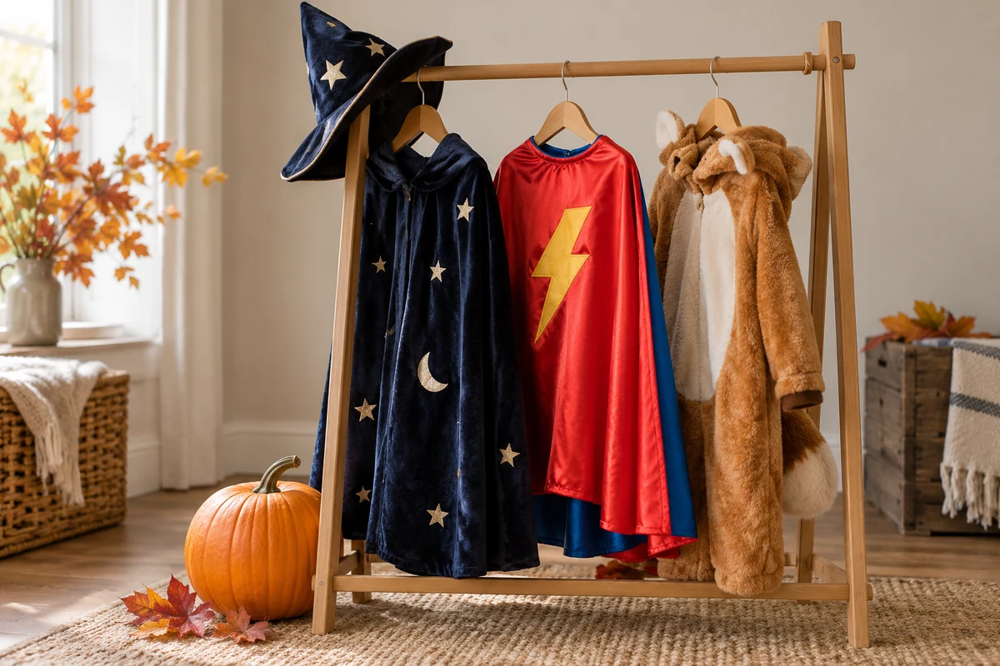

Warm by nature.
Clear by design.
Editorial typography. Warm, quiet surfaces. A little school spirit.
A shared foundation for every page, every year.
01 / FOUNDATIONS
Character, with restraint.
Oxblood carries actions. Gold is a decorative accent. Ivory gives white cards room to breathe.
TITLE · 32 / 40 PX
--fr-type-titleEvery family belongs.
HEADING · 22 / 24 PX
--fr-type-headingAround Fireside
ITEM · 18 PX
--fr-type-itemSomething to look forward to.
BODY · 16 PX
--fr-type-bodyGood information should be easy to find and comfortable to read. Keep the language direct and give each idea space.
METADATA · 14 PX
October 1–31 · Fireside Elementary--fr-type-metaGeorgia for headings. System sans-serif for information and controls. Five roles, with no separate typography tokens for each component. Page titles use 40/44px and section headings 24/32px; at 720px and below, these become 32/36px and 22/28px. Card titles stay 18/24px. Fonts come from the device, with no custom font downloads.
02 / COMPONENTS
Familiar patterns. Thoughtful details.
One card, one destination. Images are inset 16px and keep a 2:1 ratio on both Home and Events. Titles use a 24px line height; metadata uses 20px. Date and time stay together, with minutes on every hour. The whole card is clickable, without a redundant arrow. Outer corners equal the 8px image radius plus the 16px inset and 1px border. Flyers fit inside the frame; photographs fill it.
Actions
Selection
Disclosure
Agenda & meeting records
Records stay with their event. Keep summaries concise and link to the original documents.
Information
03 / MOTION
A quiet arrival.
An 8px rise and soft fade over 360ms. Cards follow at 40ms intervals, capped at 120ms. Navigation stays immediate.
Events
Volunteer
PTO team
Focused content stays visible. Changing event filters uses a quick fade, and in-page anchors do not replay the entrance. Images appear as they load; text never waits for them. Reduced motion shows everything immediately.
04 / TOKENS
A small, shared vocabulary.
| Token | Value |
|---|
At 720px and below, the gutter becomes 24px, section spacing 40px, and layout gap 24px. Page titles sit 32px above their content at every breakpoint. Fixed component spacing follows a 4px rhythm. Corner radius is shared at 12px; compact controls use 8px and circular arrows use 50%.
05 / QUALITY
Beauty should make things easier.
Legibility
| Text / background | Contrast |
|---|
Ratios are calculated from the tokens above. Gold and subtle rules are decorative, not body text or focus indicators.
Interaction & reflow
- At least 44px for standalone controls, including back links.
- Toggle labels keep the same weight and width in both states.
- Site navigation collapses into an overlay menu at 960px without moving page content. Selection, Escape, or leaving the menu closes it.
- Visible 2px keyboard focus, offset by 4px: oxblood on light surfaces, paper on ink.
- Home shows up to three event cards per row, with a 220px minimum width and 24px gaps. Events uses a single column with 16px gaps and horizontal cards above 640px.
- Underlines are omitted; actions use color, placement, and arrows.
- Clickable cards, including Spirit Wear, gain the same shadow, subtle border, and 4px upward lift on hover. Reduced motion removes translation and transitions.
- Sponsors continue on hover. Keyboard focus and reduced motion reveal a static list.
These checks support accessibility; they are not a full audit.